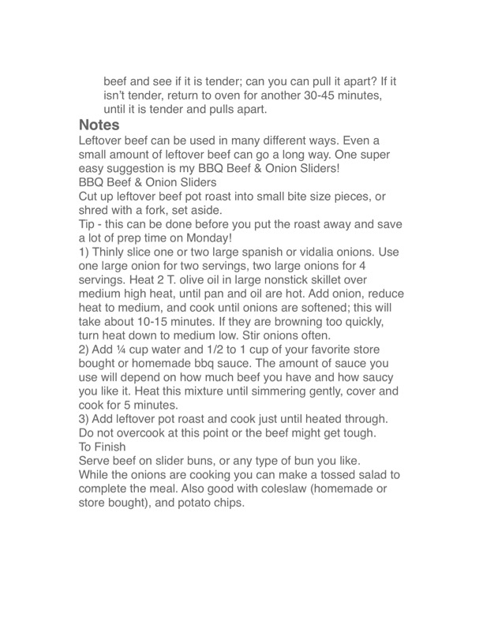

BBQ Beef & Onion Sliders

Original cookbook page 170
Leftover beef can be used in many different ways. Even a small amount of leftover beef can go a long way. One super easy suggestion is my BBQ Beef & Onion Sliders!
Cook: 15-20 minutes
Ingredients
- leftover beef pot roast, cut into small bite size pieces or shredded with a fork
- 1-2 large spanish or vidalia onions, thinly sliced
- 2 T. olive oil
- 1/4 cup water
- 1/2 to 1 cup BBQ sauce (store bought or homemade)
- slider buns or any type of bun
Instructions
- Cut up leftover beef pot roast into small bite size pieces, or shred with a fork, set aside. Tip - this can be done before you put the roast away and save a lot of prep time on Monday!
- Thinly slice one or two large spanish or vidalia onions. Heat 2 T. olive oil in large nonstick skillet over medium high heat, until pan and oil are hot. Add onion, reduce heat to medium, and cook until onions are softened; this will take about 10-15 minutes. If they are browning too quickly, turn heat down to medium low. Stir onions often.
- Add 1/4 cup water and 1/2 to 1 cup of your favorite store bought or homemade bbq sauce. The amount of sauce you use will depend on how much beef you have and how saucy you like it. Heat this mixture until simmering gently, cover and cook for 5 minutes.
- Add leftover pot roast and cook just until heated through. Do not overcook at this point or the beef might get tough.
- Serve beef on slider buns, or any type of bun you like. While the onions are cooking you can make a tossed salad to complete the meal. Also good with coleslaw (homemade or store bought), and potato chips.
Recipe #170 from collection